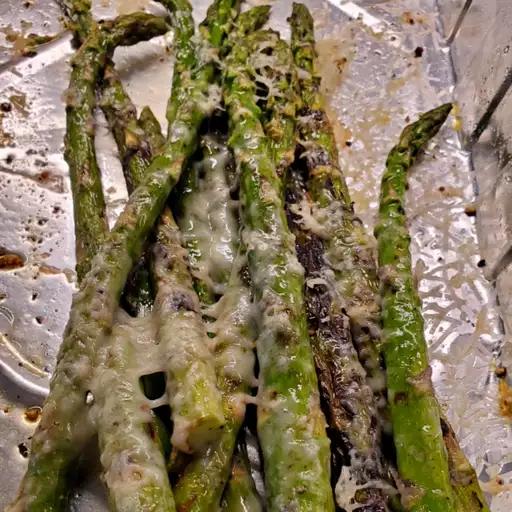

Grilled Asparagus

A simple recipe, c/o
AllRecipes
This simple recipe shouldn't take more than 15 minutes to prepare, and will
leave you with some of the best asparagus you've ever tasted!
Ingredients
- Asparagus (duh!)
- Olive Oil
- Seasonings (to taste)
Directions
- Preheat an outdoor grill for high heat and lightly oil the grate.
- Lightly coat the asparagus spears with olive oil. Season with salt and pepper to taste.
- Cook asparagus on the preheated grill, turning often until lightly charred and fork-tender about 3 to 5 minutes.